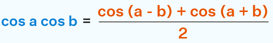

backAliasing and oversamplingWhatSimplest sampling of one signalb at rate a is equivalent to: .. in other words, sum and difference frequencies are generated, called aliasing when any (usually difference terms) are in a frequency range of interest. Minimizing aliasing artifacts wants a sampling rate over twice any frequency of interest, then a low pass filter to attenunate aliasing. To preserve details in content of varying frequencies and amplitudes, sampling should actually be over 3x highest frequency of interest. This generates lots of samples, which may be (too) expensive to process. When aliasing is insufficiently attenuated and the signal being sampled is imagery, then Moiré artifacts appear. Moving Moiré is more obvious than is still:  blekenbleu's rule: antialiasing issues imply stingy oversampling.
For a 35ppd headset, images with spatial information above 16ppd are liable to aliasing. If antialiasing improves VR, then original render to binocular 2D was incorrectly filtered. Here are examples of filtering with nominally the same bandwidth (-3dB point), but some keep more information nearer that -3dB point and better reject (mis)information beyond that point:  In digital signal processing, filters are implemented by IIR or FIR. IIR is more tolerated for audio; FIR is much preferred for imaging, since it borrows information from all nearby samples. More samples enable more coefficients for e.g. sharper cutoff, so less blur without aliasing. More samples can be obtained either by rendering from original 3D space at higher resolution, which is relatively expensive but includes more information near the 3dB spatial frequency, or by (cheaper) upscaling binocular video ("supersampling") after rendering. Oversampling is now common for digital audio and built into many DACs; it adds no information but helps reduce misinformation. I am no Nvidia VR processing expert; filtering is reportedly relatively crude. My rule of thumb for static imaging filtering wants at least 5x5 convolution. That means e.g. 7200x7200 to optimally render at 1440x1440 for 2880x2880 pixel displays. Some of that can be traded between spatial and temporal filtering for video. Because optics blur, optimal filtering wants sharpening AKA preemphasis:  Preemphasis pulses too wide provoke artifacts, e.g. visible oversharpening; higher frequency oversampling enables finer preemphasis control. |
|
maintained by blekenbleu |